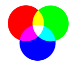
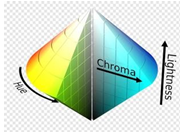
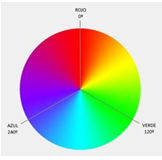
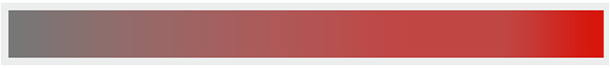
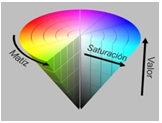
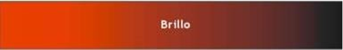

Modelo RGB
El modelo RGB se basa en lo que se conoce como síntesis aditiva de color. Empleando la luminosidad del rojo, el verde y el azul en diferentes proporciones, se produce el resto de los colores. Los monitores de los ordenadores apelan a la síntesis aditiva de color para la representación de los colores.

Los valores que se les da al RGB son valores hexadecimales que van desde el 00 hasta el FF. En html, al valor del color se le antepone una almohadilla. De esta forma un color rojo sería aquel que solo tiene activado el Red, el verde solo la parte del Green y el azul la parte del Blue:
Rojo #FF0000 Verde #00FF00 Azul #0000FF
Otras combinaciones generales de colores serían el negro (activando todos los colores), y el blanco (desactivando todos los colores):
Blanco #FFFFFF Negro #000000
Y luego combinaciones de los múltiples valores hexadecimales:
Gris Plata #C0C0C0 Azul Marino #000080 Verde Oliva #808000
Existe un modelo de color RGB con un cuarto adicional denominado RGBA. Esta última letra es el valor “alfa”, e indica la opacidad de cada píxel:
Rgba(0,255,0,0.6)
El principal problema del modelo RGB es que, por sí mismo, no ofrece una definición exacta de los tres colores que constituyen su esencia. Es decir: distintos modelos RGB pueden emplear distintas tonalidades de rojo, verde y azul. Por lo tanto, los colores resultantes de la síntesis aditiva también variarán de acuerdo al modelo RGB empleado.
Otro inconveniente del modelo RGB es que está basado en cómo funcionaba el hardware antiguamente, y los dispositivos actuales se adaptan peor a este modelo. Además, no es nada intuitivo y no se corresponde con la manera natural en la que la gente observa los colores, basada más en la intensidad de la luz.
La noción de RGB también aparece en el tratamiento de los colores que se realiza a ciertas señales de vídeo. En este caso, las señales se dividen de acuerdo al color y se transmiten de forma independiente. El resultado es una reproducción de mayor calidad.
Modelo HSL
El modelo HSL es una nueva forma de seleccionar un color, basándose en su tonalidad, saturación e iluminación (Hue, Saturation, Lightness).

Tono (Hue):es un círculo de colores que varía desde el rojo (0%) a rojo de nuevo (360º, que es lo mismo que 0º), pasando por 120º para el verde, 240º para el azul y todos los demás colores "puros" en el medio:

Saturación (Saturation):indica el porcentaje del color anterior que va a aparecer en la mezcla. Va de 0% (solo grises, nada de color) a 100% (color completo). Por ejemplo, esta es la variación completa de saturación para el color rojo:

Luminosidad (Lightness o Luminance): representa la claridad del color también con un porcentaje, siendo 0% oscuridad total (negro, independientemente de los otros componentes HSL) y 100% claridad absoluta (blanco). Por ejemplo, esta es la variación completa de luminosidad para el color blanco:
Al igual que con el RGB, el HSL cuenta con la variante HSLA, que permite especificar la
transparencia del color usando un valor “alfa” al final:
hsla(180,100%,100%, 0.8)
La gran ventaja de este modelo es que está destinado a ser más comprensible para nosotros.
Su inconveniente es que no es compatible con las versiones anteriores de Internet Explorer.
>Modelo HSV
En el modelo de color HSV, un color se define por su tono (H), su saturación (S) y su luminosidad (V), por lo que se parece más a la percepción del color humano que a los modelos de color aditivos y sustractivos. Es fácil ajustar un color por su saturación y brillo.

Tono(Hue):El tono es la porción de color del modelo de color, expresado como un número de 0 a 360 grados, siendo rojo de 0º a 60º, amarillo de 60º a 120º, verde de 120º a 180º, Cyan de 180º a 240º, azul de 240º a 300º y magenta de 300º a 360º.
Saturación(Saturation):La saturación es la cantidad de gris en el color, de 0 a 100 por ciento. La reducción de la saturación hacia cero para introducir más gris produce un efecto de desvanecimiento. A veces, la saturación se expresa en un rango de sólo 0-1, donde 0 es gris y 1 es un color primario.
Valor(Value):El valor trabaja en conjunto con la saturación y describe el brillo o intensidad del color, desde 0-100 por ciento, donde 0 es completamente negro, y 100 es el más brillante y revela la mayor parte del color.

- Pixolor
- Color Lab
- Color RGB
- Color Picker
- La especificación CSS3
- Facebook api web Developer
- Macromedia Studio
- Paint Shop Pro
- Apple Mac OS X system color picker
- The GIMP Xara X
- Xara x
- Paint.NET